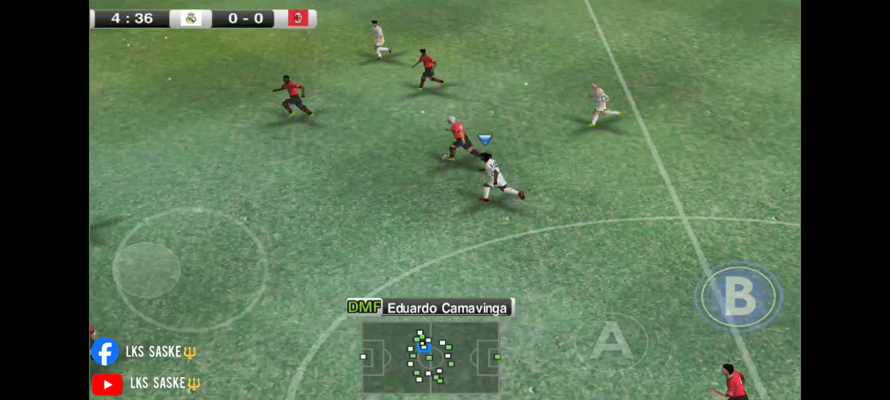
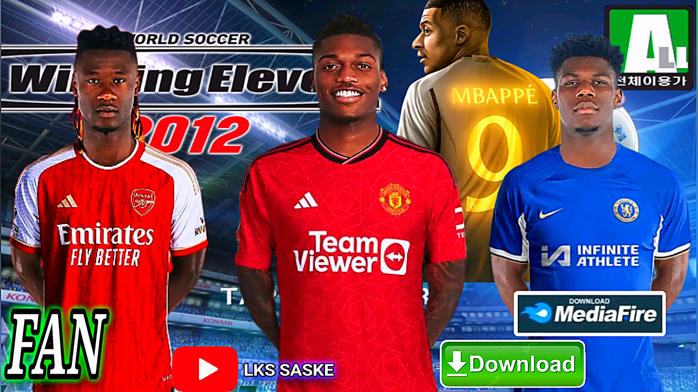

üòá SMOKE UPDATE - winning eleven 2012 mod 24 | pes 2012 mod 24 Android Gameplay offline (Android,iOS) by lks saske
FOLLOW US ON;
INTRO
üòá Winning Eleven has been the best offline video game franchise for many football fans and gamers around the world. The game was developed by Konami, it was first debuted in 1995 and has since evolved into one of the most popular football simulation game on the market. Konami has continued to improve the gameplay, graphics, and overall experience for players. With the release of Winning Eleven 2024 Mods, fans are eagerly anticipating what new features and enhancements will be included in the English version of the game.
SMOKE UPDATE of winning eleven is an advance update of the game by LKS SASKE üî±. The games is designed and updated with both the current 2024 tranfers, kits and logos and the transfer rumour update. The fan update include rumoured updates like ;
üòáüòáüòáüòáüòáüòáüòáüòáüòáüòáüòáüòáüòáüòáüòáüòáüòá
• K.Debruyne - Al Nasr
• K.Mbappe - Real Madrid
• M.Salah - Al littihid
• E.Camavinga - Arsenal
• L.Yamal - PSG
• R.Leao - Man united
• ishowspeed - Man united
• B.Silva - Barcelona
• Neymar jr - Inter Miami
• R.Araujo - Man united
• L.Diaz - Barcelona
• E. Nketiah - C. palace
And many more unlisted updates.
GAMEPLAY
________________________________________________________
This game has always been cool and awesome with attractive animations, high visual presentation, quality sounds and good smooth music and realistic quality graphics features that makes the game look good. The game has well-designed sound effects during gmaeplay (KONAMI EFECT)
It also has stadium and sarounding environmental noise effects to make the game look and sound realistic. This game straightforward and does not have any difficult tasks, it's easy to play because of its simple controls system with good screen display. Frankly speaking, this game has the most improved gameplay and features in the in both the low end devices and more modernised devices.
You must have at least an android 7+ gadget to be able to access and play the game easily

Centered Red Title
WHAT IF YOU GET A BLACK SCREEN WHEN YOU LAUNCH OR WHEN PLAYING ? ü§∑
Getting a black screen is always a commong problem experienced by many when they try playing the game.
What should i do if get a black screen?
Here are some basic things to do,
try it out ;
• Don't run or open the game if you are conected to wifi or data
• screen recording may also crash the game either temporalily or permanent
• Make sure your Phone's andoid versiin is 8 or above
• Your phone screen ratio should be 21:9 it may or may not work in the 16:9 ratio. This is one of the main reason behind the black screen
READ MORE...
The game works perfectly in most of devices used. I may dispay a message aboutncrushing during launch, but that doesn't mean it will not work. The game is an outdated version and may face difficulty if you try running in mordernised game. Most of these challanges are fixed and you can play it with any androidvphone of 8+ version, but other devices may still fail and refuse to run it.
NOTE: THIS UPDATE IS ONLY MADE FOR FUN AND NOT ACCURACY. THE GAME CONTAINS TRANSFERS BASED ON RUMOURS ONLY AND OTHERS ARE JUST FOR FUN. YOU MAY ALSO GET DUPLICATE CHARATERS IN THE GAME.
Two Column Table
GAME NAME
WINNING ELEVEN 2024
STORAGE
150MBS
PLATFORM
ANDROID
VERSION
8+
⚠️ FILES MAYBE ENCRYPTED, CONSIDER LOCATING THE PASSWORDS BEFORE DOWNLOAD

incase of any issues encountered, you can contact us on respective socials or email

 üòá SMOKE UPDATE - winning eleven 2012 mod 24 | pes 2012 mod 24 Android Gameplay offline (Android,iOS) by lks saske
üòá SMOKE UPDATE - winning eleven 2012 mod 24 | pes 2012 mod 24 Android Gameplay offline (Android,iOS) by lks saske